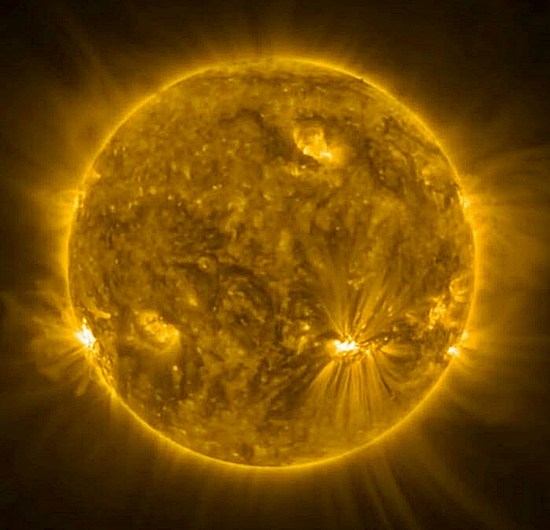
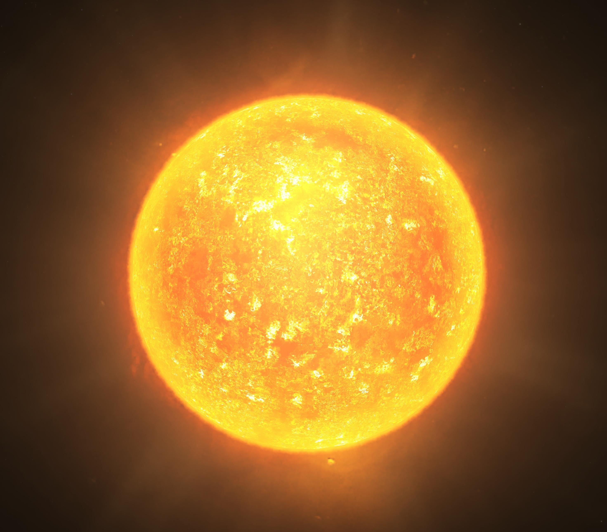

Crvene patuljaste zvijezde najčešće su vrste zvijezda u svemiru. Pripadaju onim uspješno formiranim zvijezdama, tzv. zvijezdama glavnog
niza, a zbog vrlo male mase, hladnije su od većine drugih zvijezda, pa tako i Sunca. Zanimljivo je što mogu gorjeti do čak 10 trilijuna
godina jer se nuklearne reakcije u njima odvijaju poprilično sporo te one vrlo efektivno troše svoje gorivo. Također vrlo su i male, sa
procjenjenim rasponima radijusa od 0,075 × radijusa Sunca, do otprilike polovice Sunčeva radijusa.
Crvena patuljasta zvijezda, Teegarden's Star
Žute patuljaste zvijezde, ponekad i samo žuti patuljci, pripadaju glavnom nizu zvijezda, a teže između 0,7 i 1 puta od ukupne Sunčeve mase.
Za razliku od crvenih patuljaka kojih ima jako puno, samo 10% zvijezda su žuti patuljci. Kao što im i ime govori jarko su žute boje, gotovo
bijele. Tijekom daljnjeg razvoja eventualno će se pretvoriti u crvene divove kada im se konačno potroše sve zalihe vodikova goriva. Jedna je
takva zvijezda i Sunce, koje se zapravo smatra bijelim, a za otprilike 6 milijardi godina čeka ga ista sudbina.

Žuta patuljasta zvijezda, Sunce
Narančaste patuljaste zvijezde pripadaju zvijezdama glavnog niza, a prema veličini ih nalazimo negdje između crvenih zvijezdi i onih žutih.
Kao što su i prema veličini negdje između prethodno navedenih zvijezda, tako se i prema životnom vijeku nalaze između. Dok naše Sunce može
ostati stabilno 10 milijardi godina, one mogu gorjeti i do 30 milijardi godina. Češće su od žutih patuljastih zvijezda, a znanstvenicima
su vrlo zanimljive jer emitiraju malo UV zraka te tako njihovi sustavi lakše mogu pogodovati nastanku izvanzemaljskog života.

Narančasta patuljasta zvijezda
Najveće zvijezde koje se mogu pronaći u svemiru su superdivovi, crveni ili plavi. Zajedno sa divovima nastaju onda kada zvijezda konačno ostane
bez vodika i mora početi sagorijevati helij i teže elemente. U toj fazi, rastu još i više jer im se jezgra počinje urušavati i zagrijavati
što uzrokuje širenje vanjskih slojeva zvijezde. Superdivovi mogu nastati samo od zvijezda koje imaju masu 10 puta veću od mase Sunca, pritom
su plavi superdivovi ipak manji od crvenih, a obje će vrste nova goriva trošiti toliko velikom brzinom da će se sve gorivo potrošiti već za
nekoliko milijuna godina. Također one mogu, ali i ne moraju biti svjetlije od patuljastih zvijezda te im je životni vijek kratak i uglavnom
umiru u eksplozijama supernove.
(slika Primjer zvijezde crvenog superdiva je Herschelova zvijezda granat u Kefeju. Granatna zvijezda, Mu Cephei, izgleda kao granat crvena i nalazi se na rubu maglice IC 1396.)
Crveni superdiv i najveća zvijezda, UY Scuti, credit: Thelonelyphoton
Plavi divovi su neučestale zvijezde jer se razvijaju samo iz masivnijih zvijezda te imaju kratak životni vijek. Oni su više samo jedna od
faza u kojoj se zvijezde mogu naći tijekom svojega života, nego vrsta, a pripadaju im zvijezde s klasifikacijama sjaja III i II vidljivih
na HR dijagramu prikazanom ranije. Također na njemu se može uočiti kako su se oni malo pomaknuli iz glavnog niza što ukazuje na neke drugačije
karakteristike koje imaju.
Crveni divovi su mnogo češći za razliku od plavih, a njome će postati sve zvijezde koje su manje od 10 puta uvećane Sunčeve mase. I samo će
Sunce postati crvenim divom u trenutku kada će mu ponestati vodikova goriva. Divovi također s vremenom rastu kao i superdivovi, a u tom će
stadiju zvijezda ostati samo nekoliko stotina milijuna godina prije nego što potpuno ostane bez goriva i postane bijeli patuljak.
Bijelim patuljkom postaju one zvijezde koje su u potpunosti potrošile sve vodikovo gorivo u svojoj jezgri i ne mogu više nastaviti s
nuklearnom fuzijom. One su često male u odnosu na ostale zvijezde (veličine od volumena Zemlje do veličine Sunca) jer nastaju smanjivanjem
ugašenih zvijezda uslijed nadmoćnog djelovanja gravitacijske sile prema jezgri zvijezde. Idalje sjaje jer su nekoć bili vruće zvijezde, a
konačno će se ohladiti nakon stotinu milijardi godina dok ne budu jednake temperature kao i svemir.
Smeđi patuljci su takozvane propale zvijezde, odnosno one sve one protozvijezde koje nisu uspjele postati zvijezdama zbog premale mase.
Ne sjaje i poprilično su male. Raspon njihovih masa proteže se od 13 do 80 jupiterovih masa (jupiterova masa: 1.8982×1027 kg ), a još manju masu od toga
imaju "sub-brown" patuljci.
Neutronske su zvijezde zapravo jezgre masivnih zvijezda koje jedine preostanu nakon što neka masivna zvijezda implodira i u konačnici
eksplodira u eksploziji supernove. Ona je u principu u potpunosti sastavljena od neutrona, jedne od vrsti subatomskih čestica jer je
toliko gusta (gustoća joj je otprilike onolika kolika bi bila Himalaji kada bismo je stavili u volumen šalice kave) i nastala je kao proces
vrlo ekstremnih reakcija zbog kojih su se elektroni i protoni počeli spajati i stvarati neutrone. Radijusa su 5-20 km, mase milijun puta
veće od Zemljine mase, a toliko se brzo vrte da stvaraju najjača magnetska polja u svemiru.